Stage 2025
Partnaire Luxembourg — agence de Belval
Immersion dans le secteur du travail temporaire et du recrutement, au sein d’une agence implantée dans le sud du Luxembourg : mécanismes de mise en relation entre entreprises et candidats, exigences commerciales, organisationnelles et juridiques.
125entreprises prospectées
250+candidatures triées
20profils proposés aux clients
10+intérimaires intégrés
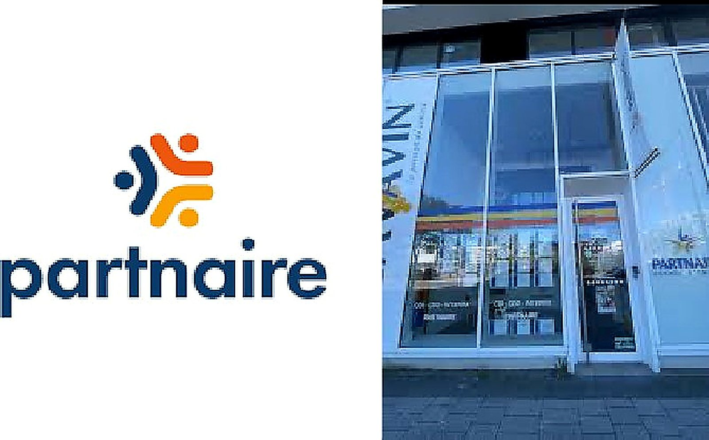
Le contexte du stage
- Stage de deuxième année dans le secteur du travail temporaire, au sein de l’agence Partnaire de Belval, au Luxembourg.
- Une agence de trois à cinq collaborateurs polyvalents, couvrant Belval, Esch-sur-Alzette, Differdange et les zones industrielles voisines.
- Poste de stagiaire commercial : développement du portefeuille client et participation directe aux recrutements.
La problématique du rapport
Comment une agence d’intérim comme Partnaire parvient-elle à concilier prospection commerciale, réactivité opérationnelle et qualité du recrutement dans un environnement concurrentiel, tout en assurant la satisfaction durable de ses clients et de ses intérimaires ?
Le Groupe Partnaire
- Entreprise française spécialisée dans les services en ressources humaines, créée en 1952 à Orléans par Philippe Gobinet père sous le nom de Secrétariat Mobile — l’une des toutes premières agences d’intérim créées en France.
- Virage vers le travail temporaire dans les années 1970 ; reprise en 1987 par Philippe Gobinet fils, qui multiplie les implantations et lance de nouvelles activités de recrutement ; repositionnement en 2022, pour ses 70 ans, autour de la qualité de service et de l’accompagnement humain.
- 267 agences en Europe, plus de 980 collaborateurs permanents, 602 M€ de chiffre d’affaires annuel et 100 000 intérimaires placés par an.
- Quatre valeurs clés : proximité, expertise, excellence opérationnelle et réactivité.
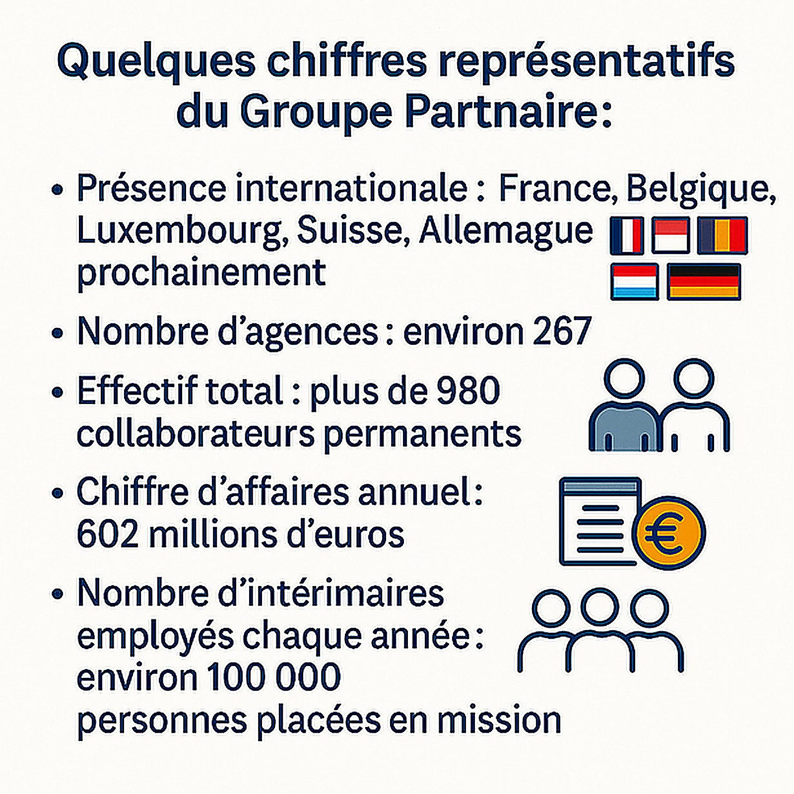
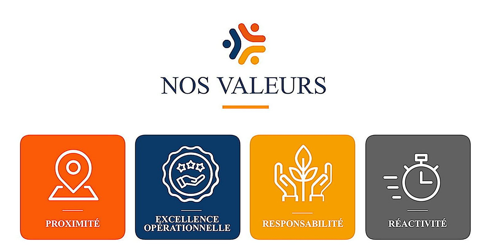
L’agence de Belval
- Le groupe est présent au Luxembourg depuis 2008. L’agence est située au 11 boulevard du Jazz, dans un quartier en plein essor économique, et dessert Belval, Esch-sur-Alzette, Differdange et les zones industrielles avoisinantes.
- Quatre secteurs après l’abandon du BTP : industrie (40 %), tertiaire (25 %), logistique et transport (25 %), hôtellerie et réception (10 %).
- Un effectif permanent de trois à cinq collaborateurs polyvalents assurant prospection commerciale, recrutement, gestion administrative des contrats et suivi des missions.
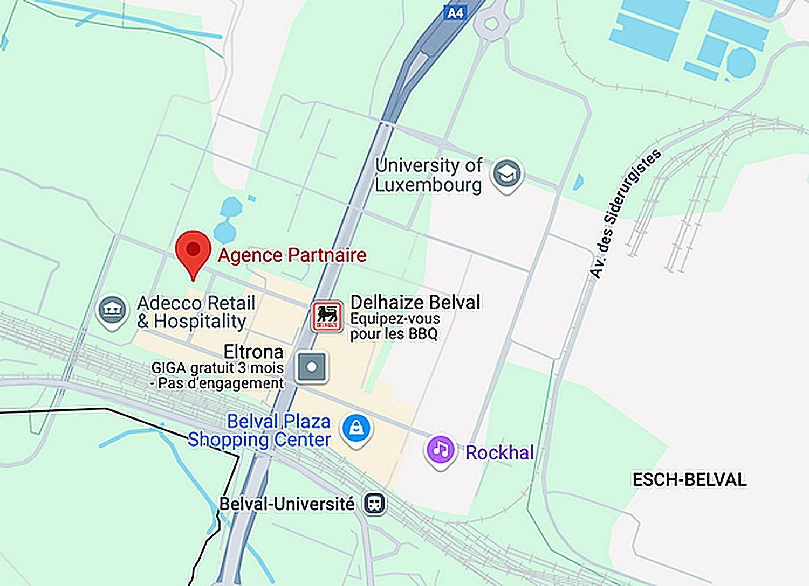
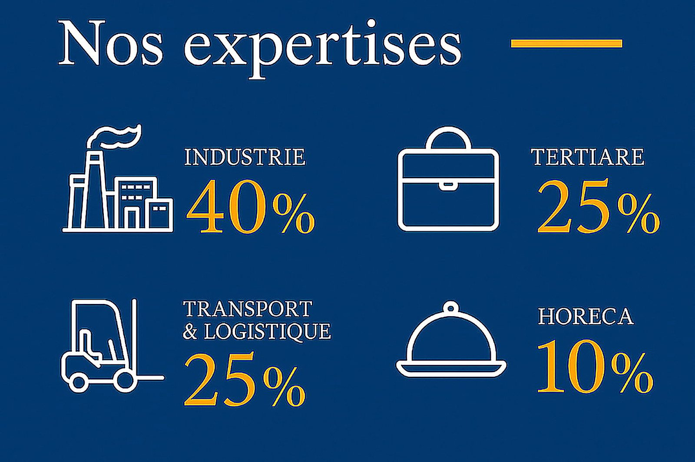
Mission 1 — Prospection téléphonique et par e-mail
- Objectif : identifier et contacter de nouvelles entreprises pour élargir le portefeuille sur les secteurs stratégiques de l’industrie, de la logistique, du tertiaire et de l’hôtellerie-restauration.
- Sources mobilisées : Kompass, LinkedIn et les Pages Jaunes du Luxembourg, recherches sectorielles générées via ChatGPT, et anciennes bases de prospection de l’agence.
- Une feuille de prospection partagée sur Google Sheets, mise à jour en temps réel : entreprise, réponse obtenue, personne contactée, adresse, téléphone, e-mail, date de l’échange, secteur d’activité et date de rendez-vous.
- Un script d’appel structurant le premier contact, puis des questions ouvertes sur les besoins ponctuels ou à venir, avant de conclure par une proposition de rendez-vous ou une transmission au chargé de recrutement. Plusieurs appels et e-mails commerciaux conduits en anglais.
- Résultats sur les quatre premières semaines : 125 entreprises contactées, 5 retours positifs, 1 rendez-vous commercial décroché, contact rétabli avec une ancienne cliente (2 nouvelles demandes de postes) et 3 demandes de CV reçues.
- Difficultés et réponses apportées : interlocuteurs non décisionnaires, personnes peu ouvertes au téléphone — d’où des relances ciblées, un meilleur ciblage en amont, les conseils des collègues expérimentés et une adaptation progressive du discours commercial.
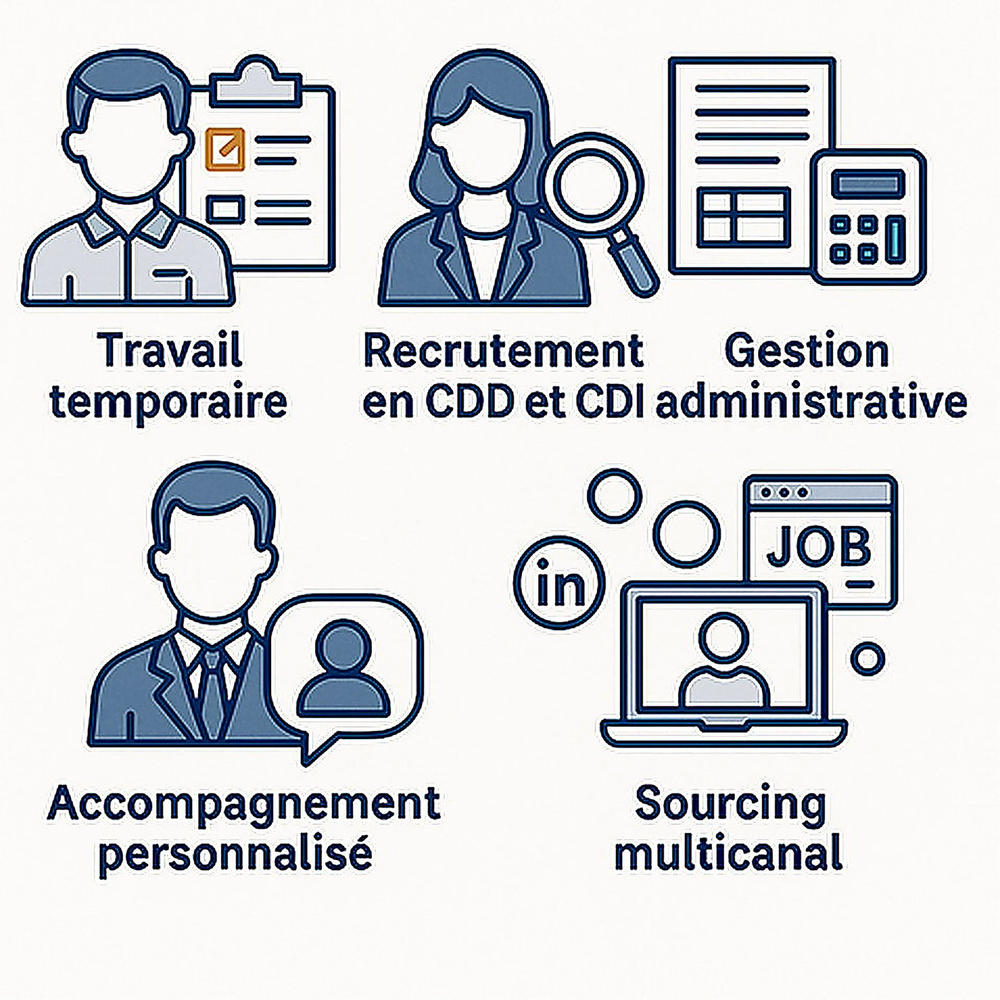
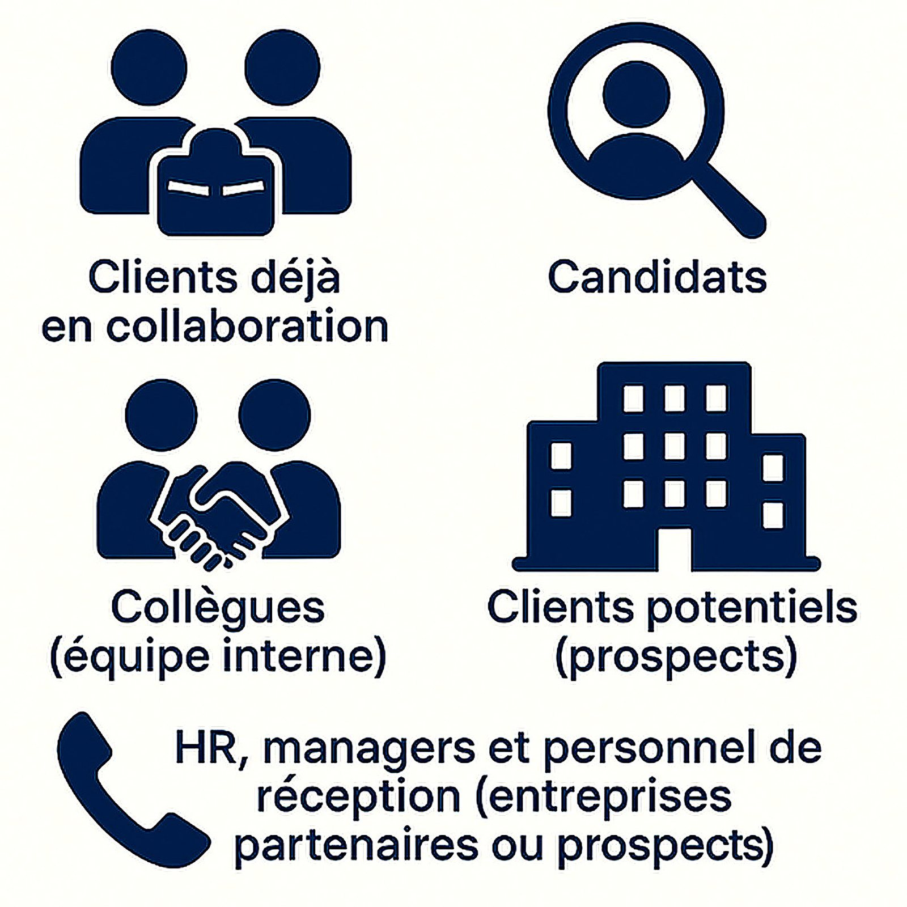
Mission 2 — Participation aux recrutements
- Chaque recrutement démarre par une commande client précisant le poste, le lieu de mission, les horaires, la rémunération, la description du poste et le profil recherché.
- Présélection des profils via Talentplug, la plateforme interne regroupant les candidatures reçues sur les différents job boards, ainsi que via la boîte mail de l’agence.
- Appels de préqualification : disponibilité, intérêt pour le poste, compatibilité avec les exigences (mobilité, conditions de travail, rémunération) et réponses aux questions.
- Mise en relation avec le client, organisation de l’entretien final et intégration du candidat avec les documents contractuels.
- Accueil physique des candidats, test de sécurité obligatoire avant première mission, gestion des appels entrants et suivi des intérimaires en poste.
- Résultats : plus de 250 candidatures triées, 20 profils proposés aux clients et plus de 10 intérimaires intégrés.

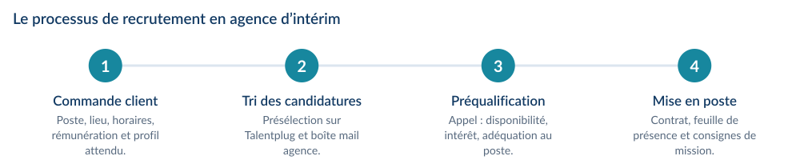
Mission 3 — Marketing digital et communication externe
- Assurer la visibilité de l’agence sur Facebook et Instagram afin d’attirer davantage de candidats sur les postes à pourvoir.
- Conception, pour chaque offre, d’une affiche originale et personnalisée : intitulé du poste, lieu de travail, description des missions, profil recherché et coordonnées.
- Un rythme d’au moins trois publications par semaine pour maintenir une présence constante et favoriser la visibilité algorithmique.
- Mise en place de réponses automatiques et gestion des messages et interactions reçus.
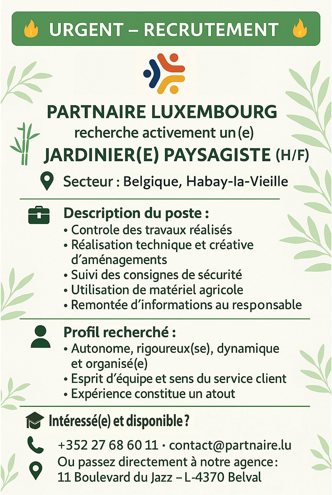
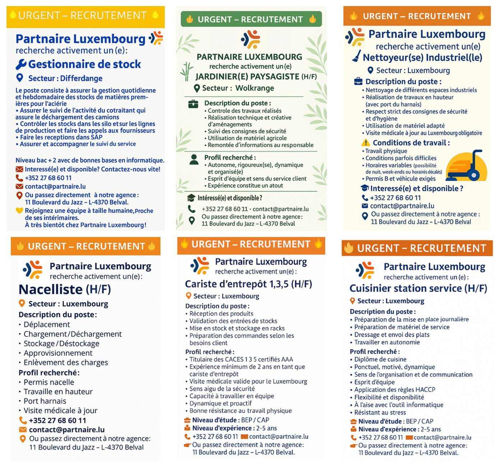
Mission 4 — Suivi client, nouveaux secteurs et événements
- Suivi des clients existants et identification de trois pistes de développement : prestations de services industriels, gestion de stocks industriels et logistique interne, entreprises de stockage et de logistique portuaire.
- Participation au RTL Jobdag organisé par l’ADEM au Belval Plaza le 16 mai 2025 : représentation de l’agence, rencontre de dizaines de candidats, développement des capacités d’écoute, de réactivité et d’analyse en temps réel.
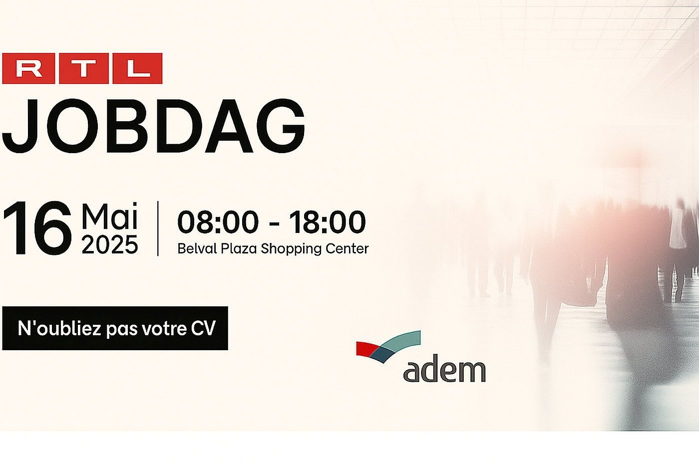
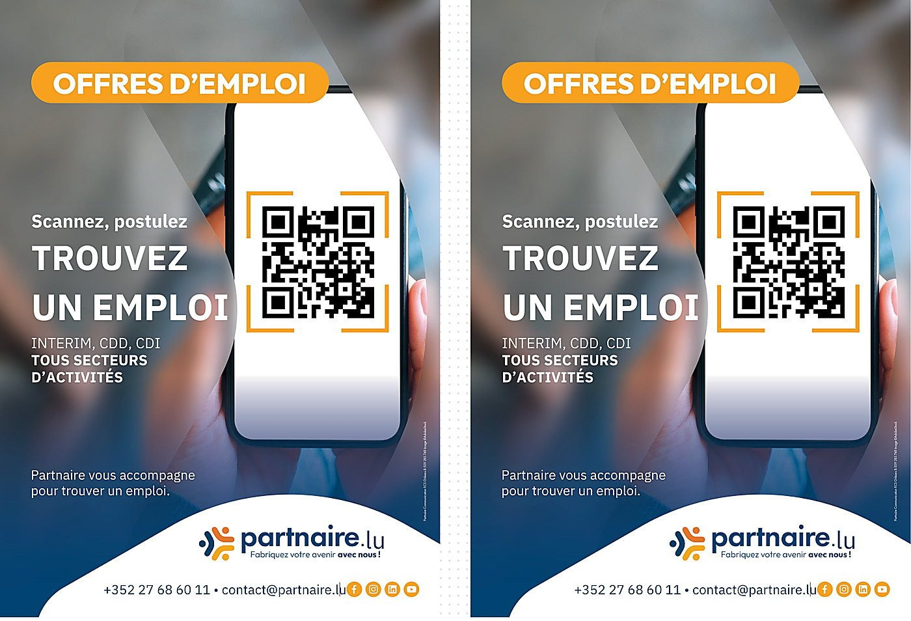
Les compétences développées
- Communication commerciale : expression orale maîtrisée, adaptation du discours en temps réel, gestion des objections, rédaction de mails professionnels et communication en anglais à l’oral comme à l’écrit.
- Prospection : scripts d’appel, ciblage stratégique, gestion d’une base partagée, organisation du processus de relance.
- Techniques RH : processus de recrutement de bout en bout, Talentplug et CRM, connaissance des profils métiers, constitution des dossiers et contrats.
- Analyse et adaptation, organisation de plusieurs recrutements en parallèle, résilience face au refus, autonomie et sens du service client.
- Un stage qui a renforcé ma volonté de m’orienter vers le développement commercial ou les ressources humaines, en lien direct avec le terrain.
Outils et méthodes mobilisés
TalentplugCRMKompassLinkedInGoogle SheetsCanva